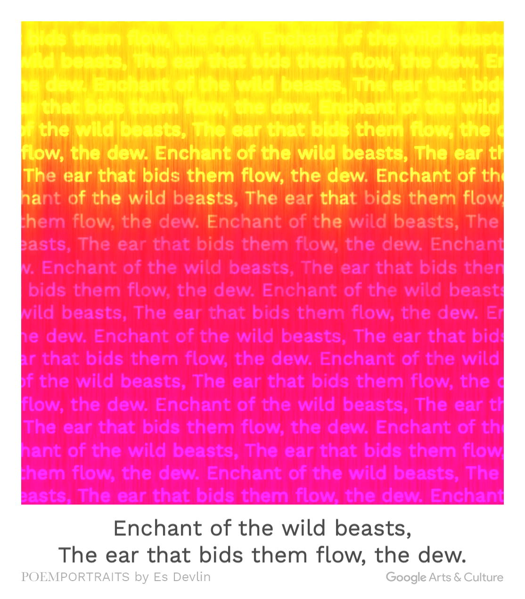

小灰没有再来了。 他没有回来。 他就像凭空消失了一样。 或许只有我知道他去了哪里，或许连我都不知道。 两年前和妻子离婚后，原本古怪的他从此变得更加孤僻。 他不再出门，将自己锁在其父亲遗留的建筑里。接连几个星期不现身与人交谈。 两年以来，除了我与小白还与他有书信来访，似乎社会各界都将他遗忘了。 他的精神状态很不对劲，他不再像是一个正常人。 直到有一天，他突然写信向我问起："它什么时候会来？" 只言片语之间充满了恐惧。 就算到现在，我依然记得他那双布满血丝的眼睛。 他是一个非常优秀的人。 他的天赋是世界上再难见到的，他的智慧是别人无法比拟的。 。。。。
Enchant of the wild beasts,
The ear that bids flow, the dew.